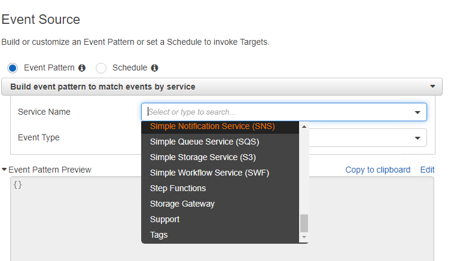

使用 CloudWatch Event 监控 ElasticSearch 事件
0x00 前言
为了监控 ElasticSearch Cluster 被非预期删除、创建等情况，需要搞一个监控，当监控到这种行为时，会触发 SNS 告警。
有如下几个思路：
- 写个脚本定期监控 CloudTrail 有非预期API CALL的时候触发SNS
- 将 CloudTrail 中的日志写到 CloudWatch log group 中，然后再自定义 metric 配合 alarm 实现告警
- 利用 CloudWatch Event 监听 elasticsearch 事件实现告警
0x01 思路解读
第一种方法就是将 CloudTrail logs 打到 S3 然后在分析 S3 中存储的 api call 情况，这种需要人工介入的地方还挺多的，不咋优雅，还有优先采用 AWS 自身提供的服务做到这件事，故跳过了。
第二种方法可以参考文档[1]，直接梭哈。
第三种就有意思了，官方文档中没有给出现成的demo[2]，需要我们自定义，这里就来聊一聊自定义的思路。
0x02 利用 CloudWatch Event 监听 elasticsearch 事件实现告警
在 CloudWatch Event 的 console 中 service name 并没有ES相关的服务。

在文档[1]中有提及“Creating a CloudWatch Events Rule That Triggers on an AWS API Call Using AWS CloudTrail”，也就是说理论上cloudtrail中记录的log在这里都能实现监控和告警。研究了一下，Event Pattern 内容如下：1
2
3
4
5
6
7
8
9
10
11
12
13
14
15
16
17{
"source": [
"aws.es"
],
"detail-type": [
"AWS API Call via CloudTrail"
],
"detail": {
"eventSource": [
"es.amazonaws.com"
],
"eventName": [
"DeleteElasticsearchDomain",
"CreateElasticsearchDomain"
]
}
}
思路就是找一个其他服务的 Event Pattern 然后尝试替换为 ES 的 source、eventSource、eventName。
效果如下：

不过现在要自己写，没准过段时间，这个功能就加上了呢。
0x03 参考链接
- [1] Creating CloudWatch Alarms for CloudTrail Events: Examples, https://docs.aws.amazon.com/awscloudtrail/latest/userguide/cloudwatch-alarms-for-cloudtrail.html
- [2] Creating a CloudWatch Events Rule That Triggers on an AWS API Call Using AWS CloudTrail, https://docs.amazonaws.cn/en_us/AmazonCloudWatch/latest/events/Create-CloudWatch-Events-CloudTrail-Rule.html